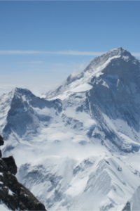
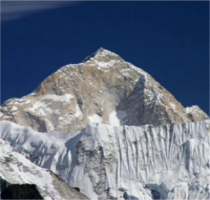
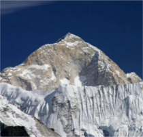

Descubre las cimas más difíciles de alcanzar y que solo unos pocos se atreven a ascender.
Los 14 ochomiles

Everest
Gasherbrum I
Kanchenjunga

Makalu
Broad Peak
Gasherbrum II
Shisha Pangma
K2


 



Everest: el más alto
Annapurna: el más peligroso
Algunos datos
¿Quieres comenzar tu aventura?
Si quieres realizar una ascensión a alguna de estas cimas es muy importante la preparación física y mental. Por eso ofrecemos un plan de entrenamiento junto a un equipo profesional con los que prepararás cada uno de los aspectos necesarios para alcanzar la cima. Entrena tu cuerpo y tu mente y aprende a llevar una alimentación adecuada. Desarrolla tus habilidades y destrezas para enfrentarte a situaciones extremas. Alcanza la cima, logra el éxito.